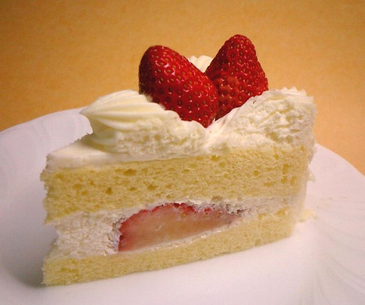

洋菓子専門店「ケーク」大阪 阿倍野 帝塚山
ケーキハウス「ケーク」へようこそ
このサイトでは、人気のケーキを紹介します。
いらっしゃいませ
甘いものを食べると、脳のなかで｢幸せホルモン｣といわれる
セロトニンが増えていると考えられています。
ケーキハウス「ケーク」へようこそ
このサイトでは、人気のケーキを紹介します。
いらっしゃいませ
甘いものを食べると、脳のなかで｢幸せホルモン｣といわれる
セロトニンが増えていると考えられています。
ショートケーキ
イチゴがのった一番人気のスポンジケーキです。大人から子供まで、年中愛されるケーキです。
モンブラン

栗をふんだんに使ったケーキです。様々な形状があります。
ザッハトルテ

こってりとしたチョコレートの濃厚な味わい
シュークリーム

サクサク生地と濃厚クリームは相性抜群